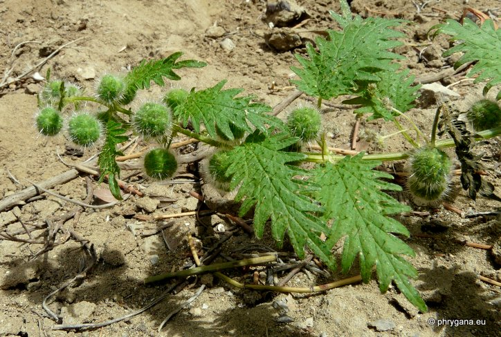
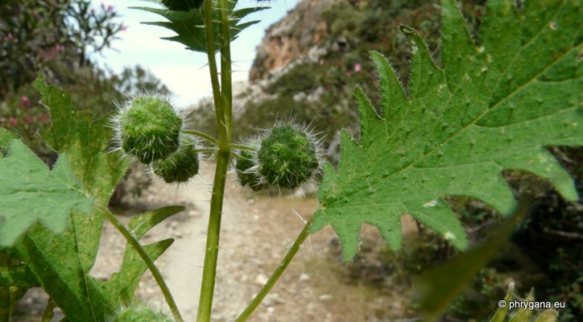
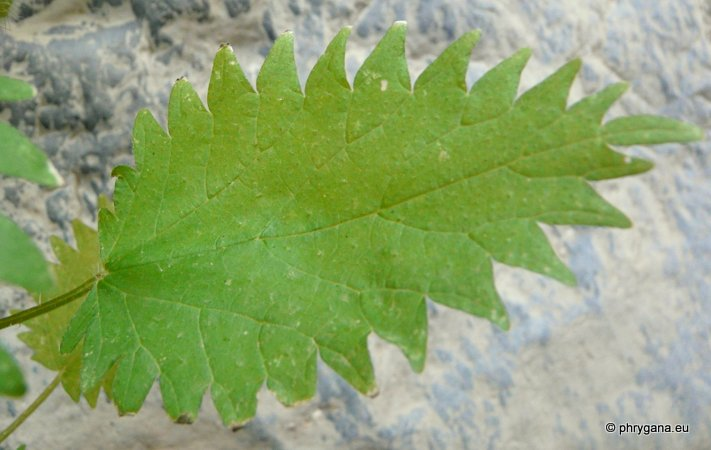
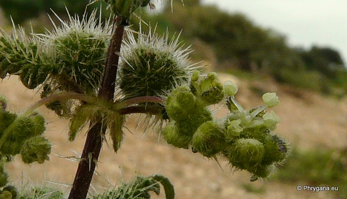

| PHRYGANA | Fauna | Flora | Galles | liste des espèces |
contact -
info - commentaires phrygana1 (at) gmail.com |
| Particularités crétoises | nouveautés | Mines | ressources naturelles |
| Urtica pilulifera L. |
| 367 | Flora | URTICACEAE | Urtica L. |
|
 Urtica pilulifera Agios Farago (Listaros) 08 mai 2012 |
| Roman Nettle - l'Ortie à pilules -- Pillen-Brennessel | |
| Plante à racine pivotante; plante poilue (poils urticants parfois peu nombreux), souvent ramifiée dès la base | |
| Feuilles: feuilles ovales à allongées, profondément incisées, tronquées-cordées à la base; pétioles à peine plus courts que les feuilles; 2 stipules | |
| Tige dressée, ramifiée | |
| Fleurs: fleurs monoïques; fleurs mâles en grappes grêles interrompues; fleurs femelles en têtes globuleuses (10 mm) denses et pédonculées | |
| Fruit: en groupes globuleux (9 - 11 mm de diamètre); graines de 2 mm | |
| Hauteur: 40 - 100 cm | Type biologique: thérophyte ramifié |
| Floraison en Crète: février mars avril mai | |
| Altitudes en Crète: 0 - 700 m | |
| Statut en Crète: indigène | |
| Biotopes en Crète: terres riches en nitrates, terrains vagues, champs cultivés ou abandonnés, décombres | |
| Distribution: région Méditerranéenne, Proche-Orient, Turquie, Europe centrale, Caucase | |
| Espèce nitrophile; plante médicinale | |
|
 Urtica pilulifera Agios Farago (Listaros) 08 mai 2012 |
|
 Urtica pilulifera Lendas gorge de Trachoulas 20 mai 2012 |
|
 Urtica pilulifera Agia Galini 07 mars 2010 |
| 07 février 2013 |
| © paul fontaine -- © Phrygana.eu 2007 -- 2013 |